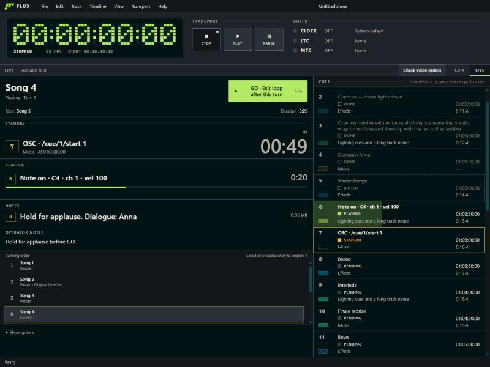

Build the show. Run the show. Trust the clock.
A desktop app that turns songs, events and cues into one project with a master timecode clock: QLab's cue model on a REAPER-style timeline.
- Version
- 0.2.0
- Platforms
- Windows, Linux
- Project file
- .flx
Opens the latest GitHub Release. Early development; there is no macOS build yet.
Cue-based tools run cues without a real timeline. Timeline tools give you the timeline without show control. FLUX puts both in one place, and the timecode comes from the same project that holds the audio and the cues, so what you see on screen and what goes out to the rig cannot disagree.
- Show technicians
- Lighting, video and sound operators who sync equipment to timecode, in a dark booth, under pressure, reading the screen from across the room.
- Musicians
- Players running backing tracks who need audio and the show's cues locked together.
- Show designers
- People building the show ahead of time in the studio, with room to think.
02One clock, every output
The audio device's sample clock drives everything. Playback, LTC, MTC and cues are all read from the same position, so the time you see is the time you send.
- LTC
- Linear timecode through an audio interface.
- MTC
- MIDI timecode through a MIDI port.
- Frame rates
- 24, 25, 29.97 drop-frame and 30 fps.
- Cues
- MIDI tracks (notes, control and program change, MIDI Show Control, SysEx) and OSC tracks (UDP) fire in step with the timecode. Seeking never replays the events it jumped over.
- Hardware
- A missing device is explained and fixable, and never blocks opening a project.
03Build it on a timeline
- Timelines
- Several per project, each with its own tracks, frame rate and start offset.
- Tracks
- Audio, notes, MIDI and OSC.
- Audio
- Import wav, aiff, flac, mp3 and ogg, mixed on the audio device's clock, with tempo detection and a metronome click.
- Operator speech
- Write dialogue and attach generated speech (ElevenLabs, with your own API key) or imported and recorded audio. Generated speech is archived in the project, so it plays offline.
- Routing
- Send each track to a named destination or to Silent. Each computer maps destinations to its own interfaces and channels.
04Run it from the booth
Switch from Edit to Live with one control (Ctrl+1, Ctrl+2). Live is read-only apart from going to a cue, built to be read from across the room.

- Time first
- A timecode you can read at a glance, with the transport state printed as a word, not only a colour.
- The running cue
- The cue that is playing with its countdown, what is on standby, and the operator notes.
- The whole cue list
- The backend derives the cues and their state, so the screen only draws what the engine knows.
05Order the timelines into a show
A setlist orders timelines into a show, with repeated or omitted entries, manual or automatic transitions, waits, and loops with devamp. Audio, cues and timecode repeat together, driven by a GO action in Live.
- Transitions
- Manual or automatic, with exact delays and waits.
- Loops
- Until GO, or a counted number of turns, with an exit after the current turn.
- No copies
- Entries reference timelines instead of copying them, so an edit shows everywhere it is used.
06Drive it from a controller
Start, stop, move between cues and timelines, and switch views from a MIDI controller (pads learned by touching them) or from OSC over UDP and TCP, for example a Stream Deck. FLUX stays the master clock: remote control moves it, and it never follows another.
It is set up in Preferences and belongs to the computer, not to the project.
| Address | Does |
|---|---|
| /flux/play | Play |
| /flux/stop | Stop and go back to the start |
| /flux/go | Run the GO action |
| /flux/cue/next | Seek to the next cue |
| /flux/cue/goto n | Seek to cue number n |
| /flux/view/live | Switch to the Live view |
07A show is one file
A .flx project is a zip with project.json and the audio the tracks use, so a show opens on another machine and just works. Legacy .fxtc projects still open.
show.flx ├─ project.json timelines, tracks, outputs └─ audio/ the files the tracks play
08Specifications and status
- Audio import
- wav, aiff, flac, mp3, ogg
- Platforms
- Windows (installer), Linux (AppImage, DEB, RPM).
- Languages
- English, Spanish.
- Diagnostics
- A rotating log and a one-click zip of logs plus a system and device report, from the Help menu.
Available today
- .flx projects with several timelines
- Audio and notes tracks, tempo detection, metronome
- LTC and MTC generation, with a full transport
- MIDI and OSC cue tracks
- Live view and setlists with GO
- Spoken operator tracks
- MIDI and OSC remote control, with lit pads
Not built yet
- Video cues
- Art-Net cues
- Chasing an external timecode
- macOS release builds
09Get FLUX
FLUX is in early development. Pick the installer for your system on the latest release page: the Windows setup, or the Linux AppImage, DEB or RPM.
- Version
- 0.2.0
- Platforms
- Windows, Linux
- Project file
- .flx